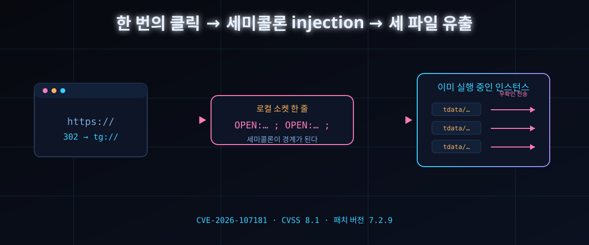

클릭 한 번에 계정 통째로 — 세미콜론 한 글자 걸러 안 넣은 메신저에서 무슨 일이

세 줄 요약. ① 링크 하나를 눌렀을 뿐인데 내 PC의 아무 파일이나 공격자 채팅방으로 옮겨지는 결함이 텔레그램 데스크톱에 있었다. ② 범인은 최신 AI도 복잡한 암호도 아니라, 명령을 나눌 때 쓰는 세미콜론을 걸러주지 않은 오래된 관습이다. ③ 판은 이미 9월 17일 붙었다. 오늘 할 일은 업데이트 확인 하나, 그리고 설정 세 개.
10월 3일, beaksec이라는 보안 연구자가 자기 블로그에 텔레그램 데스크톱 결함 해부기를 올렸다. 해커뉴스 표는 하루 반 만에 408. 제목부터가 잔인하다 — '원클릭 계정 탈취'.
볼 만한 데는 '텔레그램이 위험하다' 쪽이 아니다. 우리 앱들 안에 같은 구조가 얼마나 널려 있는지 가시화됐다. 이 글은 그 구조를 남의 집 해부도를 빌려 따라간다.
30초 요약
| 항목 | 내용 |
|---|---|
| 무슨 일 | 텔레그램 데스크톱 7.2.8까지, 링크 클릭 한 번으로 피해자 PC의 임의 파일을 공격자 채팅방에 업로드할 수 있는 결함이 공개됐다. 글은 보안 연구자 beaksec이 2026-10-03에 올리고 10-07에 고쳤다 |
| 번호·점수 | CVE-2026-107181 / CVSS 3.1 기준 8.1(High) — 공격 복잡도 낮음, 권한 불필요, 다만 사용자 클릭은 필요 |
| 패치 | 9월 16일 커밋 db3405699f로 제거, 7.2.9(9월 17일 배포)부터 안전. 원인 두 개 — 소켓 전송 시 구분자 미스크린 처리, 그리고 내부 주소 체계의 권한 확인 생략 |
| 공격 표면 | 앱이 이미 실행 중일 때 새 프로세스가 링크를 로컬 소켓로 옮겨 적는 통로. 세미콜론을 그대로 흘려보내면 명령 한 줄이 여러 줄로 쪼개진다 |
| HN 반응 | 10페이지짜리 개념도를 그려 넣은 글 솜씨에 대한 찬사가 최다. 동시에 '이건 텔레그램 얘기가 아니라 모든 데스크톱 앱 얘기가 아니냐'는 자성이 스레드 전체에 걸렸다 |
| 오늘 할 일 | ① 버전 확인(7.2.9 이상) ② '파일 저장 위치 매번 물어보기' 켜기 ③ 그룹 초대 대상을 연락처로 좁히기. 로컬 암호 설정은 열쇠만 묶는 보조책이라 방어선으로 세면 안 된다 |
1. 무엇이 터졌나
사슬의 첫 고리는 운영체제가 링크를 다루는 방식에 있다. 텔레그램 데스크톱은 자기 앞에 tg://로 시작하는 주소를 등록해 뒀다. OS는 그 접두어를 보면 무조건 텔레그램을 깨운다. 앱이 꺼져 있으면 링크를 인자로 물고 새로 뜨면 그뿐, 문제는 없다.
앱이 이미 켜져 있으면 이야기가 달라진다. OS는 '이미 실행 중이니 넘기고 끝'을 모른다. 무조건 프로세스를 하나 더 띄우고, 새로 뜬 녀석이 로컬 소켓으로 이미 살아 있는 형제를 찾는다. 연결이 붙으면 들어온 링크를 형제에게 던지고 자기는 사라진다. 두 프로세스가 파일을 나눠 쓰는 게 아니라, 링크 한 건을 소켓 너머로 옮기는 셈이다.
여기서 번역 과정이 끼어든다. 소켓은 메모리 객체를 그대로 실어 나르지 못하고, 모든 건 문자열이 된다. 텔레그램이 쓴 포맷은 자체 제작으로 단순하다. '명령:값;'. 여는 열쇠는 세미콜론 하나다.
tg://x?a=1;CMD:quit
↓ (그대로 소켓로)
OPEN:tg://x?a=1;CMD:quit;
↓ (받는 쪽은 ;마다 자름)
OPEN:tg://x?a=1 / CMD:quit보내는 쪽은 이 세미콜론을 링크 본문의 평범한 글자로만 취급해서 스크린을 안 시킨다. 받는 쪽은 세미콜론을 명령 경계로 쓴다. 보낸 적 없는 명령이 살아 있는 앱 안에서 실행된다. injection의 고전, '구분자 충돌'이다.
두 번째 고리는 앱 안쪽에 숨어 있던 내부 주소다. 텔레그램 소스 코드 속에 운영체계에 등록된 적 없는 interpret:라는 접두어가 있다. 원래 용도는 팀 내 배포 자동화였다. 새 버전을 릴리스 채널에 올릴 때 사람이 일일이 파일·설명문을 고르지 않도록, 스크립트가 '어디서·어느 채널로·무엇을·어떤 글귀로'를 텍스트 파일 한 장에 적어 두고 그 경로를 넘기는 구조다.
결함은 이 실행 함수에 권한 확인이 통째로 빠진 데 있었다. 누가 시켰는지 안 묻고, 확인 창도 안 띄운다. 파일 이름만 적힌 파일을 읽어서 지정한 채널로 올려준다. 명령행에서 호출하는 한 공격자가 되려면 이미 그 PC에 들어온 뒤여야 하니 실익이 없었다. 첫 번째 고리가 이 함수를 링크 한 번 건너편에 연결해 버렸다.
세 번째 고리는 '피해자 디스크에 텍스트 파일 한 장을 미리 심는' 문제. 여기서 공격자는 아무것도 안 했다. 텔레그램 데스크톱은 그룹 채팅에서 받은 8MiB 이하 파일을 기본 설정으로 자동 다운로드한다. 피해자가 그룹에 입장하는 것만으로 파일이 '다운로드/Telegram Desktop' 폴더에 도착한다. 남은 유일한 미지수는 사용자 이름이었고, 내부 함수가 상대 경로를 받아들인다. '../../../' 세 단계만 올리면 사용자 이름을 모르고도 절대 경로가 완성됐다.
여기까지가 임의 파일 읽기다. 계정 탈취로 격상되는 지점은 암호화 구조 쪽이다. 텔레그램 데스크톱의 지역 데이터는 평문 저장인데, 설정에서 로컬 암호를 걸지 않으면 기본값은 '빈 문자열 암호'다. 열쇠를 감싸는 열쇠가 빈 문자열과 파일 옆에 평문으로 놓인 값에서 계산되니, tdata 폴더의 파일 하나만 손에 넣으면 감싼 열쇠를 다시 만들어 안쪽 열쇠를 풀 수 있다. 폴더 이름은 설치가 다를 때마다 다른 게 아니라 전부 같은 값이었다. 공격은 1대1이 아니라 1대N이 된다.
마지막은 배달화. 텔레그램 안에서 눌러지는 tg:// 링크는 프로세스 안에서 처리돼 소켓를 거치지 않으므로 injection 지점이 안 생긴다. 그래서 공격자는 평범한 https 링크를 던지고, 자기 서버에서 302로 가공된 tg:// 링크로 넘긴다. 브라우저가 OS를 거쳐 텔레그램을 깨우고, 소켓에서 세미콜론이 터진다.
2. 왜 대단한 논점인가
① 신기술 결함이 아니라 40년 된 구조 결함의 부활이다
SQL injection, shell injection, SMTP 헤더 주입까지 전부 '데이터 안에 섞인 제어 문자가 명령으로 승격'되는 같은 그림이다. 2026년에 데스크톱 메신저가 이 그림으로 무너졌다. 새 공격면이 아니라 안 씻은 오래된 그릇이 진짜 위험 요소라는 평범한 교훈이 다시 실물로 찍혔다. 이 글 전체가 'AI 보안'이 아니라 '입력 검증'에 관한 글인 이유다.
② 확인 창 하나가 방어선 전체였던 구조
권한 확인 없는 내부 함수는 '당연히 외부에서 못 오니까'라는 가정 하나로 방어돼 있었다. 소켓라는 문 하나가 그 가정을 깼다. 보안 설계에서 '도달 불가능'은 성질이 아니라 그때그때 확인해야 하는 상태다. 실제로 패치 커밋은 함수 자체를 없애는 방향으로 갔다(코드 1줄 제거가 아니라 함수째 삭제).
③ 자동 다운로드라는 '편의'가 공격의 절반이었다
공격자가 파일을 심은 게 아니라 앱이 대신 받아다 정해진 자리에 놓아줬다. 편의 기능과 신뢰 경계가 같은 폴더에 사는 문제가 이토록 저렴하게 악용될 수 있다는 실물 사례다. 패치 이후에도 자동 다운로드 자체는 남아 있어서, 설정 한 번이 각자 방어가 된다.
④ 폭로 과정이 모범 사례로 기록될 구조다
제보→수정→공개까지가 정석대로 굴렀다. 6월 25일 ZDI 경유로 제보, 벤더는 9월 16일 제3자 통보 없이 자체 커밋으로 먼저 고쳤고(커밋 번호가 공개됨), 9월 17일 7.2.9 배포, 9월 30일 ZDI가 '이미 수정됨'으로 종결하며 공개 권한이 회수됐다. 그 다음에야 10월 3일 글이 나왔다. 피해 0에 가까운 타임라인이 나온 이유다.
3. 바로 써먹기
5분이면 끝나는 방어 3단계
| 우선 | 할 일 | 어디서 | 이유 |
|---|---|---|---|
| 1 | 버전 확인 후 7.2.9 이상으로 갱신 | 설정 → 정보(또는 스토어 갱신) | 구분자 스크린 처리 + 내부 함수 제거. 이것만이 진짜 차단 |
| 2 | '파일 저장 위치 매번 물어보기' 켜기 | 설정 → 고급 → 다운로드 | 자동 다운로드 자체가 꺼져서 공격자가 미리 심는 파일이 디스크에 못 온다. 갱신 전이라면 가장 유효한 절반 방어 |
| 3 | 그룹 초대 대상을 '내 연락처'로 축소 | 설정 → 개인 정보 | 내부 함수가 파일을 보낼 수 있는 곳은 채널·슈퍼그룹 한정. 그 자리에 도달할 기회를 없앤다 |
| 보조 | 로컬 암호 설정(진짜 암호처럼) | 설정 → 개인 정보 → 로컬 암호 | 파일 탈취 자체는 못 막고, 훔친 세션의 재사용만 무력화. '있으면 낫다'급이라 1~3번 대신이면 안 된다 |
개발자라면 자기 앱 점검용 3문항. ① IPC·소켓·명령행으로 값을 옮길 때 수신 측 구분자(세미콜론, 줄바꿈, NULL 등)를 보내는 쪽이 스크린하는가, 받는 쪽이 스크린을 믿지 않고 재직렬화하는가. ② '내 것만 부르니까'로 권한 확인을 생략한 내부 핸들러가 몇 개인가. ③ 자동 저장 기능의 저장 경로가 상대 경로로 탈출 가능한가. 텔레그램이 세 항목에 한 번에 걸렸다는 사실이 곧 점검 목록이다.
4. 해외 반응 쟁점
스레드 표 408 댓글의 무게중심은 '텔레그램 때리기'가 아니라 글 자체의 완성도였다. 공격 사슬·암호화 구조·배달 경로까지 10페이지 분량의 개념도를 그려 넣은 구성이라, 보안 블로그 글의 기준선을 올렸다는 평이 많았다. 필자는 글 안에 사슬 전체를 도식화한 페이지 10장어치를 통째로 첨부했다.
두 번째 갈래는 '우리도 똑같다'는 자성이다. URI 핸들러를 등록한 모든 데스크톱 앱, 이미 실행 중일 때 인자를 받아 넘기는 모든 클라이언트가 같은 소켓 설계 위에 서 있다. 텔레그램은 그 중 '값이 아니라 경계를 믿은' 쪽일 뿐이라는 냉소가 대표 답변으로 달렸다.
세 번째는 로컬 암호 논쟁이다. 이 결함의 피해 시나리오에서 훔칠 대상은 '암호화되지 않은 열쇠'였고, 그 문 자체를 여는 옵션이 로컬 암호다. 다만 탈취 자체를 막진 못하니 체감 효용에 대해 '있으면 30초 늦추는 정도'라는 평가절하와 '그래서 훔친 걸 못 쓴다'는 반박이 붙었다. 공개 자료 기준 저자의 표현은 '세션 사용을 못 쓰게 만들 뿐, 파일 탈취를 막진 못한다'로 정리된다.
네 번째는 CVE 번호 자체에 대한 냉소다. ZDI 경유 제보가 벤더 독립 수정으로 끝나면서 번호 부여와 공개 시점이 한 박자씩 늦었다는 서늘한 관찰이 있었다. '이미 고쳐진 결함'은 보안 업계에서 제일 값싼 뉴스라는 얘기다.
5. 마시기 전 주의
첫째, 이 글의 기술 서술 전부는 공격자 관점의 개념 증명이다. 실제 코드 조각·요청 헤더 등 재현에 필요한 디테일은 원문에만 있고, 이 글은 옮기지 않는다.
둘째, 취약 범위 '데스크톱 7.2.8까지'는 공개된 검증 범위 기준이다. 작성자 본인은 Windows 6.9.3에서 확인했다고 적었다. 모바일 플랫폼은 이 글의 서술 밖에 있으니 모바일 보안이 괜찮다는 뜻으로 읽으면 안 된다.
셋째, '세 파일만 빼면 열쇠가 열린다'는 기본 설정 상태에 대한 설명이다. 로컬 암호를 걸어 둔 계정에서는 탈취한 세션이 곧바로 재사용되지 않는다. 반대로 설정 안 한 상태는 자물쇠가 없다는 뜻이기도 하다.
넷째, 브라우저 단계에서 OS가 '이 사이트를 앱에서 열까요' 식의 확인을 띄우는 경우가 있다. 이 창이 있으면 공격은 한 번 걸러진다. 다만 기본값·이전 사용 이력에 따라 뜨지 않을 수 있으니 방어선으로 세면 안 된다.
다섯째, 이 결함은 이미 패치됐다. 오늘 이 글로 해야 할 일은 공포가 아니라 버전 확인이다. 그리고 같은 그림을 내 앱이 안 쓰고 있는지 점검하는 일.